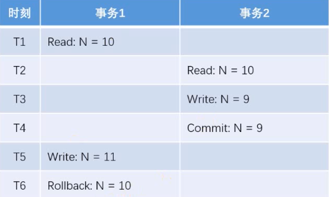
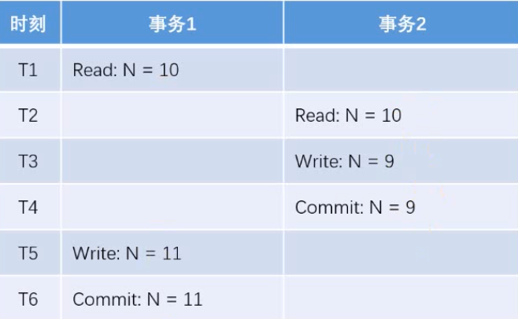
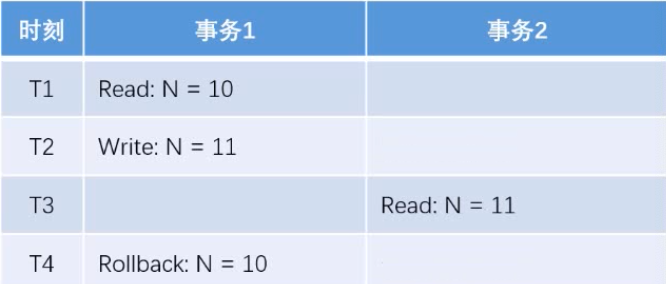
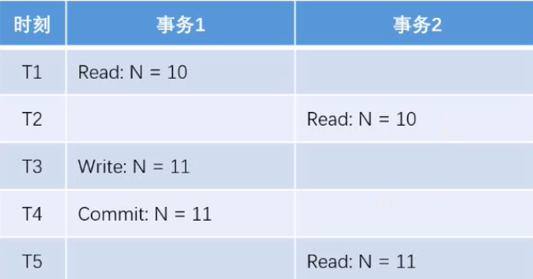
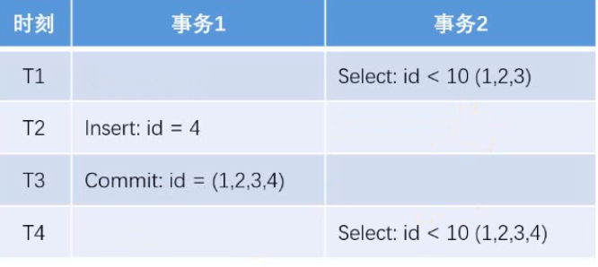
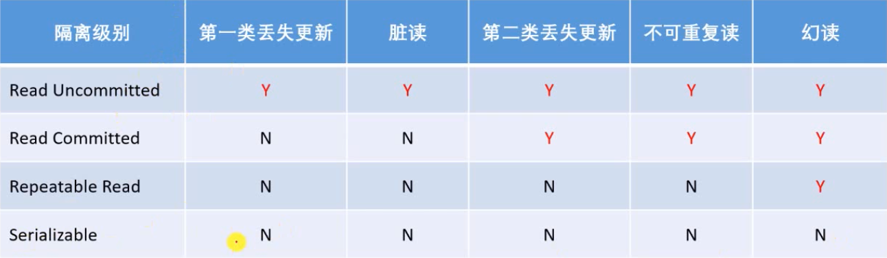

前言
本篇文章首先介绍了事务及其特性，然后介绍并使用Spring事务管理，最后开发了显示评论和评论模块，评论分为帖子的评论和评论的回复以及指定用户的回复。分页模块与首页逻辑相同，在模板页面可以复用。
事务
- 在 MySQL 中只有使用了 Innodb 数据库引擎的数据库或表才支持事务。
- 事务处理可以用来维护数据库的完整性，保证成批的 SQL 语句要么全部执行，要么全部不执行。
- 事务用来管理 insert,update,delete 语句
事务四个特性
- 原子性（Atomicity，或称不可分割性）
一个事务（transaction）中的所有操作，要么全部完成，要么全部不完成，不会结束在中间某个环节。事务在执行过程中发生错误，会被回滚（Rollback）到事务开始前的状态，就像这个事务从来没有执行过一样。 - 一致性（Consistency）
在事务开始之前和事务结束以后，数据库的完整性没有被破坏。这表示写入的资料必须完全符合所有的预设规则，这包含资料的精确度、串联性以及后续数据库可以自发性地完成预定的工作。 - 隔离性（Isolation，又称独立性）
数据库允许多个并发事务同时对其数据进行读写和修改的能力，隔离性可以防止多个事务并发执行时由于交叉执行而导致数据的不一致。
事务隔离分为不同级别
读未提交（Read uncommitted
读提交（read committed）
可重复读（repeatable read
串行化（Serializable）如果没有做隔离，可能发生脏读、不可重复读、幻读。 第一类丢失更新，第二类丢失更新
- 持久性（Durability）
事务处理结束后，对数据的修改就是永久的，即便系统故障也不会丢失。
并发异常
- 第一类丢失更新
某一个事务的回滚，导致另外一个事务已更新的数据丢失了
 - 第二类丢失更新
某一个事务的提交，导致另外一个事务已更新的数据丢失了
 - 脏读
某一个事务，读取了另外一个事务未提交的数据
 - 不可重复读
某一个事务，对同一个数据前后读取的结果不一致
 - 幻读
对同一个表前后查询到的行数不一致
 - 事务隔离级别
实现机制
- 悲观锁（数据库）
共享锁（S锁） 对某数据加共享锁后，其他事务只能对该数据加共享锁，不能加排它锁
排它锁（X锁）对某数据加了排他锁后，其他事务对该数据不能加锁。 - 乐观锁（自己实现）
版本号、时间戳等
在更新数据前，检查版本号是否变化，若变化则取消本次更新，否则就更新
Spring事务管理
- Spring对任何底层数据库都用的是一套
- 声明式事务
通过XML配置，声明某方法的事务特征
通过注解，声明某方法的事务特征 - 编程式事务（比较复杂的用这种）
通过Transaction Template 管理事务，
通过它执行数据库操作事务传播机制
事务的传播性一般用在事务嵌套的场景，比如一个事务方法里面调用了另外一个事务方法，那么两个方法是各自作为独立的方法提交还是内层的事务合并到外层的事务一起提交，这就是需要事务传播机制的配置来确定怎么样执行。
常用的事务传播机制如下： - PROPAGATION_REQUIRED
Spring默认的传播机制，能满足绝大部分业务需求，如果外层有事务，则当前事务加入到外层事务，一块提交，一块回滚。如果外层没有事务，新建一个事务执行 - PROPAGATION_REQUES_NEW
该事务传播机制是每次都会新开启一个事务，同时把外层事务挂起，当当前事务执行完毕，恢复上层事务的执行。如果外层没有事务，执行当前新开启的事务即可 - PROPAGATION_NESTED
该传播机制的特点是可以保存状态保存点，当前事务回滚到某一个点，从而避免所有的嵌套事务都回滚，即各自回滚各自的，如果子事务没有把异常吃掉，基本还是会引起全部回滚的。 - 记忆
Required:必须的。说明必须要有事务，没有就新建事务。
supports:支持。说明仅仅是支持事务，没有事务就非事务方式执行。
mandatory:强制的。说明一定要有事务，没有事务就抛出异常。
required_new:必须新建事务。如果当前存在事务就挂起。
not_supported:不支持事务，如果存在事务就挂起。
never:绝不有事务。如果存在事务就抛出异常
声明式事务示例
- 声明式事务需要配置两个 个参数，隔离级别和Propagation（传播）
Propagation是一个枚举，里面的实例就是上面说的 事务传播机制：
REQUIRED、REQUIRES_NEW、NESTED - 在方法上加上注解，示例：
1
2
3
4
5
6
7
8
9@Transactional(isolation = Isolation.READ_COMMITED, propagation = Propagation.REQUIRED)
public Object save() {
//新增用户
//新增帖子
return “OK”;
}
编程式事务示例
1 |
|
显示评论
数据层
评论表DDL1
2
3
4
5
6
7
8
9
10
11
12
13CREATE TABLE `comment` (
`id` int NOT NULL AUTO_INCREMENT,
`user_id` int DEFAULT NULL,
`entity_type` int DEFAULT NULL,
`entity_id` int DEFAULT NULL,
`target_id` int DEFAULT NULL,
`content` text,
`status` int DEFAULT NULL,
`create_time` timestamp NULL DEFAULT NULL,
PRIMARY KEY (`id`),
KEY `index_user_id` (`user_id`) /*!80000 INVISIBLE */,
KEY `index_entity_id` (`entity_id`)
) ENGINE=InnoDB AUTO_INCREMENT=232 DEFAULT CHARSET=utf8
entity_type：是评论的类型，比如1代表帖子的评论，2代表评论层的评论等
entity_id: 目标帖子的id或者目标评论楼层的id
target_id: 指定回复某个人（像朋友圈一样 ）
实体
1
2
3
4
5
6
7
8
9
10
11
12
13public class Comment {
private int id;
private int userId;
private int entityType;
private int entityId;
private int targetId;
private int status;
private String content;
private Date createTime;
//getter setter toString
}Mapper
1
2
3
4
5
6
7
8
9
10
11
12
13
14
15
16
17
18
public interface CommentMapper {
/**
* 实现评论分页
* @param entityType 评论类型
* @param entityId 评论目标的Id
* @param offset 分页
* @param limit 每页显示评论数量
*/
List<Comment> selectCommentByEntity(int entityType, int entityId, int offset, int limit);
//查询条目数
int selectCountByentity(int entityType, int entityId);
}映射器
实现前面两个方法，第一个是根据评论类型，评论目标找到所有帖子，然后从offset开始显示limit条评论。
第二个就是查询当前评论类型评论目标的所有评论1
2
3
4
5
6
7
8
9
10
11
12
13
14
15
16
17
18
19
20
21
22
23<sql id=“selectFields” >
id, user_id, entity_type, entity_id, target_id, cotent, status, create_time
</sql>
<select id=“selectCommentByEntity” resultType=“Comment”>
select <include refid=“selectFields”></include>
from comment
where status = 0
and entity_type = #{entityType}
and entity_id = #{entityId}
oder by create_time asc
limit #{offset},#{limit}
</select>
<select id=“selectCountByentity” resultType=“int”>
select count(id)
from comment
where status = 0
and entity_type = #{entityType}
and entity_id = #{entityId}
</select>
</mapper>
业务层
1 |
|
表现层
常量
1
2
3
4
5
6
7
8
9/***
* * 实体类型 帖子*
* */
int ENTITY_TYPE_POST= 1;
/***
* * 实体类型 评论*
* */
int ENTITY_TYPE_COMMENT= 2;Controller
1
2
3
4
5
6
7
8
9
10
11
12
13
14
15
16
17
18
19
20
21
22
23
24
25
26
27
28
29
30
31
32
33
34
35
36
37
38
39
40
41
42
43
44
45
46
47
48
49
50
51
52
53
54
55
56
57
58
59
60
61
62
63
64
65
66
67
68
69
70
71
72
73
74
75
76
77
78/***
* * 查询评论直接在查询帖子详情页里面一起做，因为是在同一个页面*
* ****@param***discussPostId*
* ****@param***page 和首页帖子分页用的同一个逻辑，用同一个分页对象处理*
* ****@return**
**/
(path = "/detail/{discussPostId}", method = RequestMethod.GET)
public String getDiscussPost(@PathVariable("discussPostId") int discussPostId, Model model, Page page) {
//查询帖子
DiscussPost post = discussPostService.findDiscussPostById(discussPostId);
model.addAttribute("post", post);
//查询帖子作者信息
User user = userService.findUserById(post.getUserId());
model.addAttribute("user", user);
//评论分页信息
//默认current=1,当点第n页的时候，链接是path+ ?current=n
//根据current得出offset，查询某一页的List
page.setLimit(5);
page.setPath("/discuss/detail/" + discussPostId);
page.setRows(post.getCommentCount());
//评论：帖子的评论
//回复：给评论的评论
//先查找到某个帖子里的某一页的全部评论
List<Comment> commentList = commentService.findCommentByEntity(ENTITY_TYPE_POST, post.getId(), page.getOffset(), page.getLimit());
//评论里要显示用户头像名字，所以用一个map来存评论和用户信息（遍历前面的评论）
List<Map<String, Object>> commentUserList = new ArrayList<>();
if(commentList != null) {
for (Comment comment : commentList) {
Map<String, Object> commentMap = new HashMap<>();
commentMap.put("user", userService.findUserById(comment.getUserId()));
commentMap.put("comment", comment);
//指定评论下的所有回复(不分页）
List<Comment> replyList = commentService.findCommentByEntity(
ENTITY_TYPE_COMMENT, comment.getId(), 0, Integer.MAX_VALUE);
//回复的map列表
List<Map<String, Object>> replyUserList = new ArrayList<>();
//回复的map里要包括，回复，回复的用户，回复的目标用户
if(replyList != null) {
for (Comment reply : replyList) {
Map<String, Object> replyMap = new HashMap<>();
replyMap.put(“reply”, reply);
replyMap.put(“user”, userService.findUserById(reply.getUserId()));
//回复目标
User target = reply.getTargetId() == 0 ? null : userService.findUserById(reply.getUserId());
replyMap.put(“target”, target);
replyUserList.add(replyMap);
}
}
//把评论下的回复信息集合添加到评论map里
//最终给页面展现的数据都存在这个map里
commentMap.put(“replies”, replyUserList);
//回复数量
int replyCount = commentService.findCommentCount(ENTITY_TYPE_COMMENT, comment.getId());
commentMap.put(“replyCount”, replyCount);
//把所有数据都添加到commentMap里面以后，把map放进List
commentUserList.add(commentMap);
}
}
model.addAttribute(“comments”, commentUserList);
return “/site/discuss-detail”;
}
}
模板
回帖数量
1
<h6><b class=“square”></b> <i th:text=“${post.commentCount}”>30</i>条回帖</h6>
遍历commentUserList
1
<li class=“media pb-3 pt-3 mb-3 border-bottom” th:each=“cmap:${comments}”>
头像
1
2
3<a href=“profile.html”>
<img th:src=“${cmap.user.headerUrl}” class=“align-self-start mr-4 rounded-circle user-header” alt=“用户头像” >
</a>楼层
评论分页的话，每一页都是重新生成一个commentUserList，模板页面也是每次都重新进，所以楼层不能直接按照循环次数来算楼层，应该是当前页的offset加上循环次数
thymeleaf会给循环变量提供一个状态对象，是循环变量名加Stat, 如cmapStat，可以获取循环次数1
<i th:text=“${page.offset + cmapStat.count}”>1</i>#
内容
1
<div class=“mt-2” th:utext=“${cmap.comment.content}”>
发布时间
1
<span>发布于 <b th:text="${#dates.format(cmap.comment.createTime,'yyyy-MM-dd HH:mm:ss')}">2019-04-15 15:32:18</b></span>
注意yyyy-MM-dd和YYYY-MM-dd是不一样的格式
回复数量
1
<li class="d-inline ml-2"><a href="#" class="text-primary">回复(<i th:text="cmap.replyCount">2</i>)</a></li>
循环回复
1
<li class=“pb-3 pt-3 mb-3 border-bottom” th:each=“reply:${cmap.replies}”>
判断回复是否有指定人并根据判断显示
1
2
3
4
5
6
7
8
9
10<div>
<span th:if=“${rmap.target==null}”>
<b class=“text-info” th:text=“${rmap.user.username}”>鲁迅</b>:
</span>
<span th:if=“${rmap.target!=null}”>
<i class=“text-info” th:text=“${rmap.target.username}”>王小波</i> 回复
<b class=“text-info” th:text=“${rmap.user.username}”>鲁迅</b>:
</span>
<span th:utext=“${rmap.reply.content}”>顶</span>
</div>回复时间
1
<span th:text=“${#dates.format(rmap.reply.createTime,’yyyy-MM-dd HH:mm:ss’)}”>2020-04-15 15:32:18</span>
每个回复按钮和回复框匹配，点击哪一个评论的回复键，就会链接到下面的回复框，展开哪一个评论的回复框
注意：1
2
3a href =“” 默认打开的还是当前页面，会刷新一下重新打开。
a href =“#” 浏览器地址栏网址后面会多显示1个#。不会刷新页面，会回到页面顶部。
所以评论回复用#
1 | <li class="d“inline ml-2”><a th:href="|“huifu-${rmapStat.count}|" ”ata-toggle="collapse" ”lass="t“xt-primary">”复</a></li> |
- 分页逻辑可以直接复用首页的分页
1
2
3
4
5
6
7
8
9
10
11
12
13
14
15
16
17
18
19
20
21
22
23<!— 分页 —>
<!— href是超链接 th:href=“@{路径}”—>
<!— th:href=“@{${page.path}(current=1,limit=10)}”表示的路径就是/index?current=1&limit=10 —>
<!— Thymeleaf有一个#number工具类，返回一个连续数组（可以设定开始和结尾数字） —>
<nav class=“mt-5” th:if=“${page.rows>0}” th:fragment=“page”>
<ul class=“pagination justify-content-center”>
<li class=“page-item”>
<a class=“page-link” th:href=“@{${page.path}(current=1)}”>首页</a>
</li>
<li th:class=“|page-item ${page.current==1?’disabled’:’’}|”>
<a class=“page-link” th:href=“@{${page.path}(current=${page.current-1})}”>上一页</a>
</li>
<li th:class=“|page-item ${i==page.current?’active’:’’}|” th:each=“i:${#numbers.sequence(page.from,page.to)}”>
<a class=“page-link” th:href=“@{${page.path}(current=${i})}” th:text=“${i}”>1</a>
</li>
<li th:class=“|page-item ${page.current==page.total?’disabled’:’’}|”>
<a class=“page-link” th:href=“@{${page.path}(current=${page.current+1})}”>下一页</a>
</li>
<li class=“page-item”>
<a class=“page-link” th:href=“@{${page.path}(current=${page.total})}”>末页</a>
</li>
</ul>
</nav>
添加评论
数据层
增加评论数据方法（CommentMapper里）
mapper
1
2//添加评论
int insertComment(Comment comment);mapper映射器
1
2
3
4<insert id="insertComment" parameterType="Comment">
insert into comment(<include refid="insertFields"></include>)
values(#{userId},#{entityType},#{entityId},#{targetId},#{content},#{status},#{createTime})
</insert>
修改帖子的评论数量（在DIscussPostMapper里）
mapper
1
2//更新帖子评论数量
int updateCommentCount(int id, int commentCount);mapper映射器
1
2
3<update id=“updateCommentCount”>
update discuss_post set comment_count = #{commentCount} where id = #{id}
</update>
业务层
处理添加评论的业务
增加评论，然后更新帖子评论数量
DiscussPostService 添加更新评论数量的事务
1
2
3
4//更新帖子评论数量
public int updateCommentCount(int id, int commentCount) {
return discussPostMapper.updateCommentCount(id, commentCount);
}CommentService 添加评论并更新帖子评论数量的事务
1
2
3
4
5
6
7
8
9
10
11
12
13
14
15
16
17
18
19
20
21
22
23
24
25
26
27
28
29//事务管理（这里用声明式事务）
//添加评论并且更新帖子的评论数量
(isolation = Isolation.*READ_COMMITTED*, propagation = Propagation.*REQUIRED*)
public int insertComment(Comment comment) {
if (comment == null) {
throw new IllegalArgumentException(“参数不能为空”);
}
//添加评论
//把文本里的html特殊符号转义，不要让网页把文本里的字符当成标签
comment.setContent(HtmlUtils.*htmlEscape*(comment.getContent()));
//过滤敏感词
comment.setContent(sensitiveFilter.filter(comment.getContent()));
int rows = commentMapper.insertComment(comment);
//更新帖子评论数量
if(comment.getEntityType() == *ENTITY_TYPE_POST*) {
//添加评论以后重新计算帖子的评论数量
int count = commentMapper.selectCountByentity(comment.getEntityType(),comment.getEntityId());
//更新帖子的评论数量
discussPostService.updateCommentCount(comment.getEntityId(),count);
}
return rows;
}
Controller
处理添加评论请求
设置添加评论的表单1
2
3
4
5
6
7
8
9
10
11
12
13
14
15
16
17
18
19
20
21
22
23
24
25
(“/comment”)
public class CommentController {
private CommentService commentService;
private HostHolder hostHolder;
//重定向需要帖子id，所以可以直接把帖子id也传过来
//用Comment实体来接收各种评论的参数
(value = “/add/{discussPostId}”, method = RequestMethod.*POST*)
public String insertComment(@PathVariable(“discussPostId”) int discussPostId, Comment comment){
//可能没有登录，获取不到User,后面统一做异常处理
comment.setUserId(hostHolder.getUser().getId());
comment.setStatus(0);
comment.setCreateTime(new Date());
commentService.insertComment(comment);
return “redirect:/discuss/detail/“ + discussPostId;
}
}
模板
帖子评论框
方法是post，action是动态的，因为要拼接帖子的id（重定向需要）,路径要和上面controller里面的接收路径一样
还要设置两个隐藏的输入框，把comment必要的信息传给Controller，这里固定是帖子，值就是1，entityId需要动态设置。1
2
3
4
5
6
7<form class=“replyform” method=“post” th:action=“@{/comment/add/${post.id}|}”>
<p class=“mt-3”>
<a name=“replyform”></a>
<textarea placeholder=“在这里畅所欲言你的看法吧!” name=“content”></textarea>
<input type=“hidden” name=“entityType” value=“1”>
<input type=“hidden” name=“entityId” th:value=“${post.id}”>
</p>评论的回复框（不指定人）
1
2
3
4
5
6
7
8
9
10<form method=“post” th:action=“@{|/comment/add/${post.id}|}”>
<div>
<input type=“text” class=“input-size” name=“content” placeholder=“请输入你的观点”/>
<input type=“hidden” name=“entityType” value=“2”>
<input type=“hidden” name=“entityId” th:value=“${cmap.comment.id}”>
</div>
<div class=“text-right mt-2”>
<button type=“submit” class=“btn btn-primary btn-sm” onclick=“#”” 回 复 </button>
</div>
</form>评论的回复框（指定人）
注意：这里的tatget是要设定回复输入框的目标用户，而不是找这个被回复的评论的target，所以值应该是rmap.user，而不是rmap.target1
2
3
4
5
6
7
8<form>
<p>
<input type=“text” class=“input-size” name=“content” th:placeholder=“|回复${rmap.user.username}|”/>
<input type=“hidden” name=“entityType” value=“3”>
<input type=“hidden” name=“entityId” th:value=“${cmap.comment.id}”>
<input type=“hidden” name=“targetId” th:value=“${rmap.user.id}”>
</div>
</form>